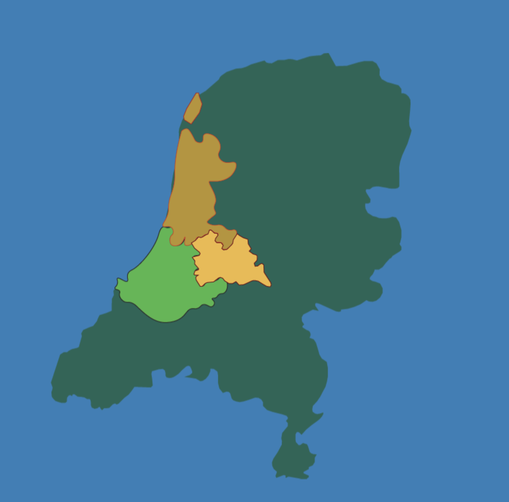
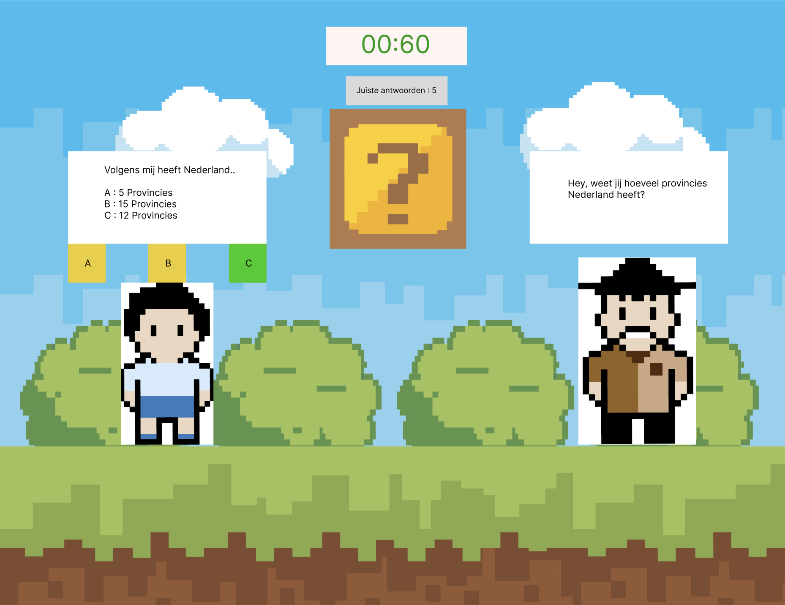
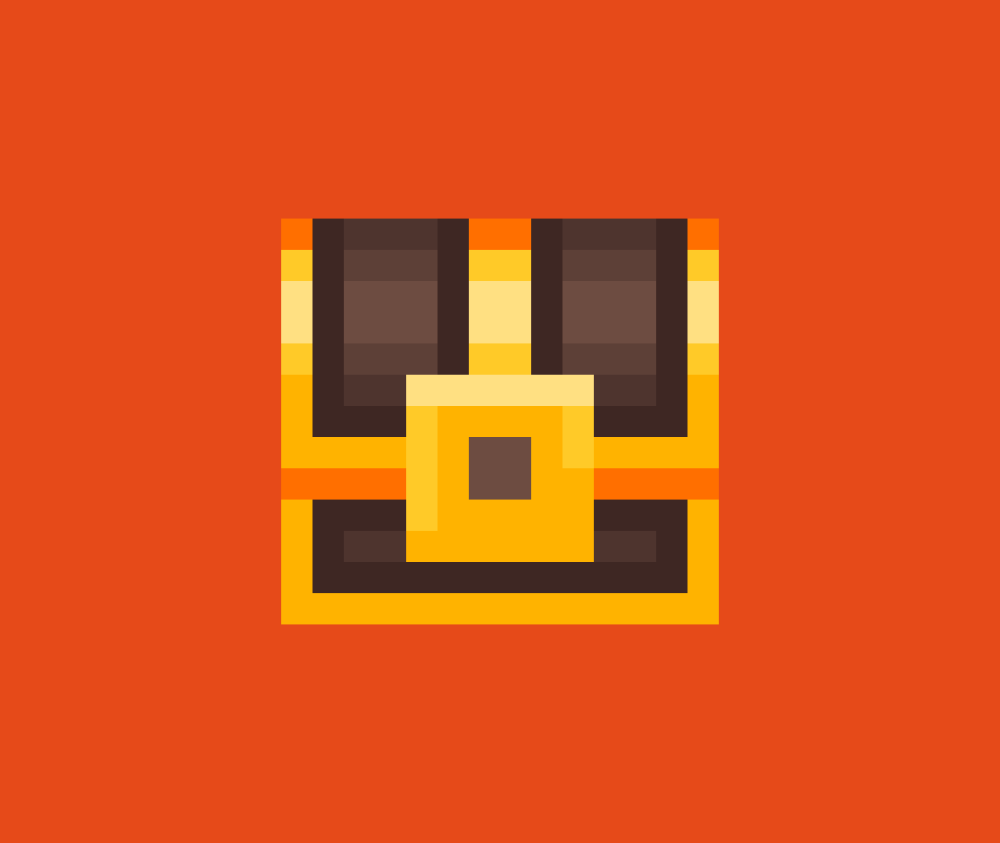

Het Concept
De leerlingen zullen gebaseerd op wat ze geleerd hebben vragen krijgen, ze kunnen de vragen goed of fout beantwoorden,
hoe meer vragen je goed beantwoordt hoe moeilijker de vragen worden (de moeilijkere vragen kunnen gezien worden als "bonus" vragen en zijn niet perse nodig) & hoe meer fouten je maakt hoe makkelijker de vragen worden.
Het is de bedoeling dat de speler zo veel mogelijk provincies wint door zo veel mogelijk vragen goed te beantwoorden!
De speler krijgt een timer, met 60 seconden, waarin ze zo veel mogelijk vragen goed moeten beantwoorden, heeft de leerling genoeg vragen goed? Dan krijgt de provincie zijn of haar kleur en winnen ze!


Doelgroep
Het spel is gemaakt voor kinderen in groep 5, dus ongeveer tussen de 7 en 10 jaar van leeftijd.
In dit jaar zullen ze voor het eerst kennis gaan maken met Aardrijkskunde en worden ze dus voorbereid voor de onderwerpen in groep 6!
Natuurlijk is het daarom ook belangrijk om er voor te zorgen dat ze alle juiste onderwerpen voorgeschoteld krijgen, in groep 5 zullen de volgende onderwerpen aan bod komen.
De Nederlandse Provincies
De Hoofdsteden
Belangrijke Rivieren & Wateren
Kaartlezen
Het gebruiken van een legenda
Herspeelbaarheid
De herspeelbaarheid van het spel zit hem in het feit dat hoe meer je leert, hoe interessanter het spel gespeeld kan worden.
Omdat er 12 provincies/levels zijn zullen er over de loop van het schooljaar steeds meer vragen komen over de verschillende onderwerpen, die gebonden zijn aan de provincies.
Hoe meer je leert en speelt, hoe completer de kaart van Nederland in het spel wordt gepresenteerd.
Door meer te spelen kan je bijvoorbeeld een nieuw uiterlijk voor je karakter verdienen of misschien een powerup die het volgende level makkelijker maakt!
Is het spel te makkelijk? Dat geeft niet, als je veel correcte antwoorden geeft krijg je automatisch moeilijkere vragen.. dit verhoogt de kans dat je "geheime" items krijgt.. dus doe je best!
